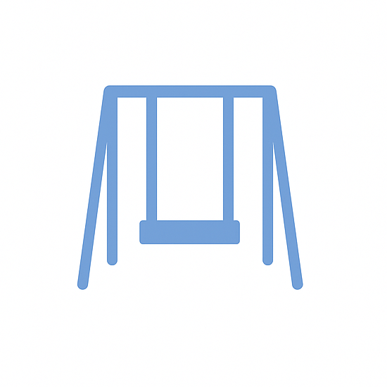

This project involves the development of a web-based revision tool to support learners preparing for the RLSS National Pool Lifeguard Qualification (NPLQ). It provides flashcards, quizzes, and progress tracking, alongside an admin dashboard for content and user management. The app was built using React, Firebase, and Vercel, and serves as a first full-stack project exploring modern web development practices.
This project aims to investigate variations in the transit photometry of a known transiting exoplanet by conducting time-series photometry at OSO facilities, comparing new and existing data, and interpreting the findings within the context of scientific literature, culminating in a detailed written report.

Investigating how Baryon Acoustic Oscillations depend on redshift in the Dark Energy Survey Catalogue.

Modelling the landing area around swings through mathematical calculations.